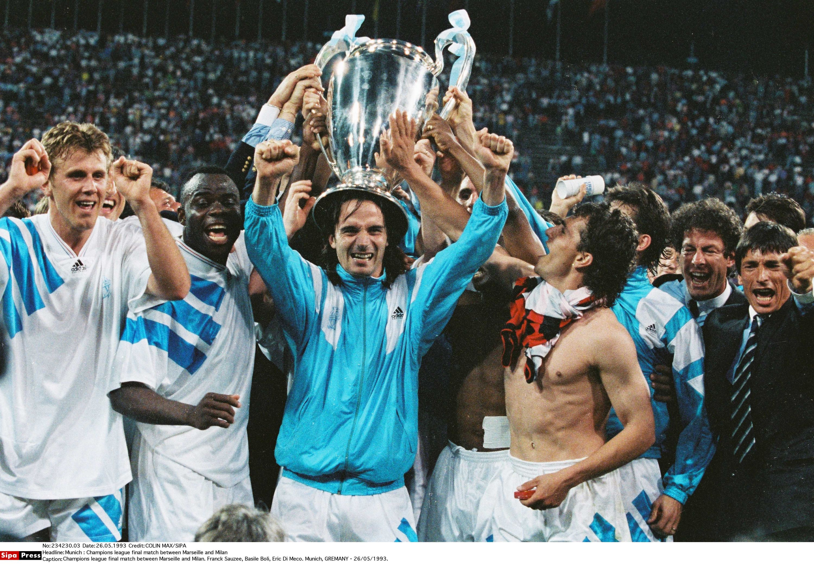
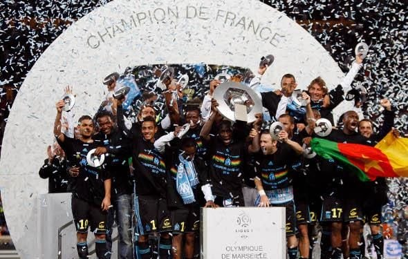
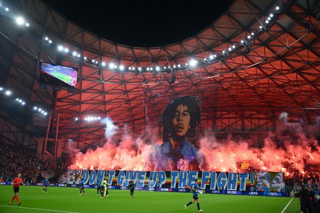
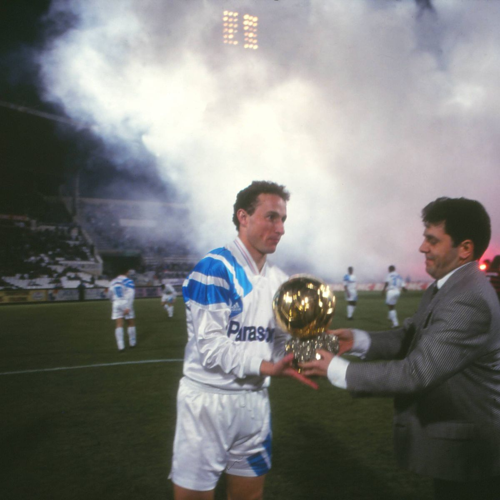
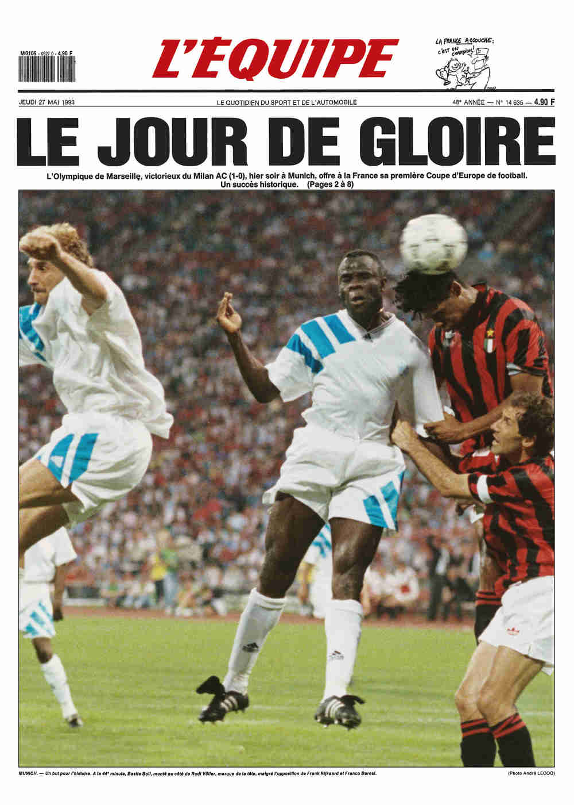
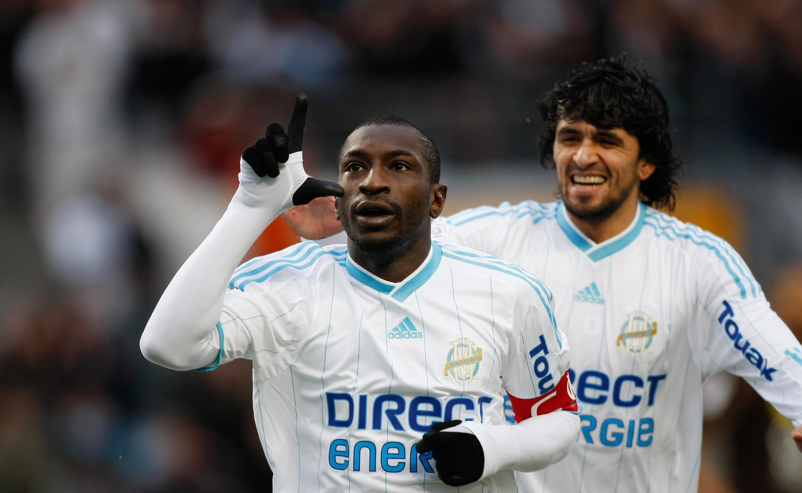
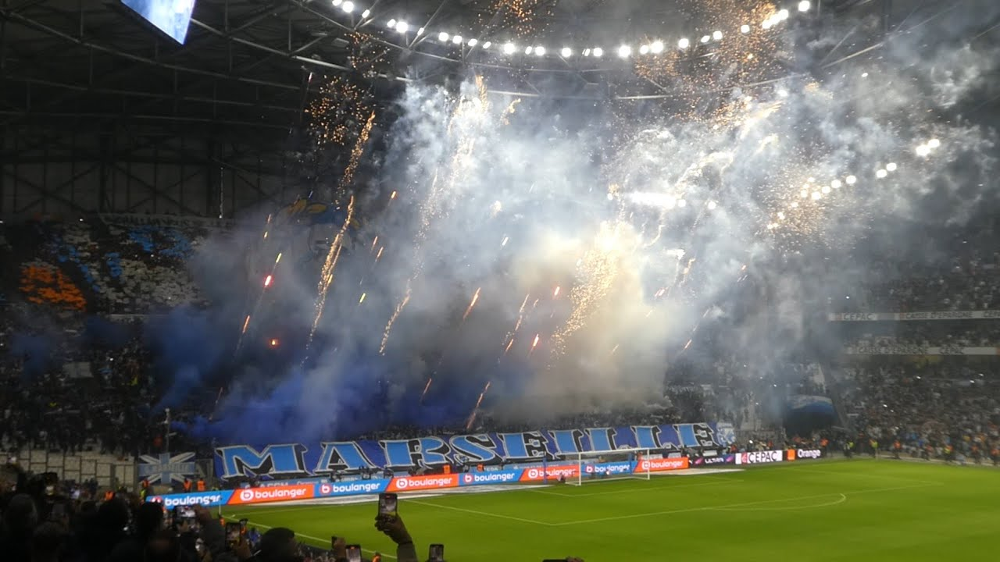

Moments iconiquesIconic moments
LA GALERIE DE LÉGENDE THE LEGEND GALLERY
Les plus grands moments de l'histoire de l'OM. The greatest moments in OM's history.

OM
Europe
Ligue des Champions 1993 — La nuit de Munich1993 Champions League — The Munich night
26 Mai 1993

VictoiresVictories
10 Titres de Champion de France10 French Champion Titles
1937 – 2010

StadeStadium
Le Vélodrome — 67 000 âmesThe Vélodrome — 67,000 souls

SupportersSupporters
L'ambiance unique du VélodromeThe unique Vélodrome atmosphere

JoueursPlayers
Deschamps, Papin, Boli — Les légendesDeschamps, Papin, Boli — The legends

Europe
Supercoupe d'Europe 19931993 European Super Cup

VictoiresVictories
10 Coupes de France10 French Cups

LégendeLegend
Cantona — La légende marseillaiseCantona — The Marseille legend
1988 – 1991

StadeStadium
Le Vélodrome by nightVélodrome by night